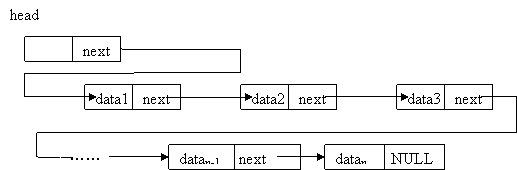
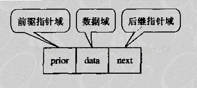
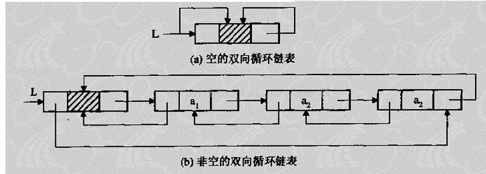

- 前言：题目顺序 不严格按照剑指offer的题目顺序，有些过于简单的，涉及不到算法的，不适合用Python解决的题目，不会被记录。
题目描述
输入一个链表，按链表从尾到头的顺序返回一个ArrayList。
题目分析
本题目中的链表，特指的是单链表。
单链表定义
线性表的链式存储结构的特点是用一组任意的存储单元存储线性表中的数据元素，这组存储单元可以存放在内存中未被占用的任意位置。

数据域：存储数据元素信息的域，指针域：存储直接后继位置的域。指针域中存储的信息成为指针或链。
链表相比于顺序表，最大特点是某一个节点不仅保存当前节点的数据，还通过指针指示了上一个或者下一个节点的地址（单链表仅指向下一个节点）。
解题思路
但是因为链表中的元素在内存中是随机存储，并不像顺序表的顺序存储，所以链表不支持随机存取的方式，只能通过指针域的指针决定下一个搜索位置。
因此，对于单链表来说，按照链表顺序读取的方式，只支持从头结点（或者附加头结点）挨个读取到尾节点，想要逆向读取，需要用到 递归 的方法。
具体流程为：从头结点依次读取节点，如果节点的指针域不为空，即存在后继节点，则将该节点压入递归栈中，直到遇到没有后继节点的尾节点，将尾节点的数据域存入ArrayList中，在依次将栈中的节点弹出，并将弹出节点的数据域追加在ArrayList。
过程比较简单，就不画图演示了。
复杂度分析
逐个遍历节点，并且压入栈的时间复杂度为 $O(n)$ 。
弹出栈并且追加到ArrayList中的时间复杂度也为$O(n)$。
所以，总的时间复杂度为$O(n)$。
空间复杂度，因为需要用到递归栈来存储递归过程中的节点，故空间复杂度为$O(n)$。
双向循环链表


如果是双向循环链表的话，每个节点不仅指示下一个节点的地址，还指示了上一个节点的地址，则可以从尾节点反向依次查找，并且由于是循环链表，可以直接从头结点找到尾节点，而不需要把链表轮询一遍。
则时间复杂度为$O(n)$，空间复杂度为$O(1)$。查找的空间复杂大大降低，不过由于每个节点多了一个指针域，需要消耗更多的存储空间。
代码
# -*- coding:utf-8 -*-
# 单链表节点的类定义
# class ListNode:
# def __init__(self, x):
# self.val = x # 数据域
# self.next = None # 指针域
class Solution:
# 返回从尾部到头部的列表值序列，例如[1,2,3]
def printListFromTailToHead(self, listNode):
# write code here
if listNode is None:
return []
# 递归运算，返回值用到了Python的特性，列表的+操作为将2个列表拼接在一起。
return self.printListFromTailToHead(listNode.next) + [listNode.val]